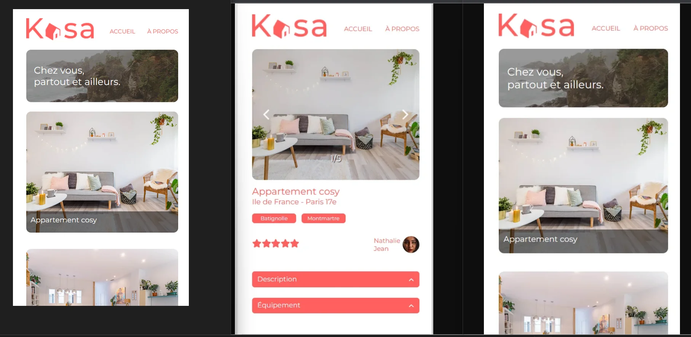
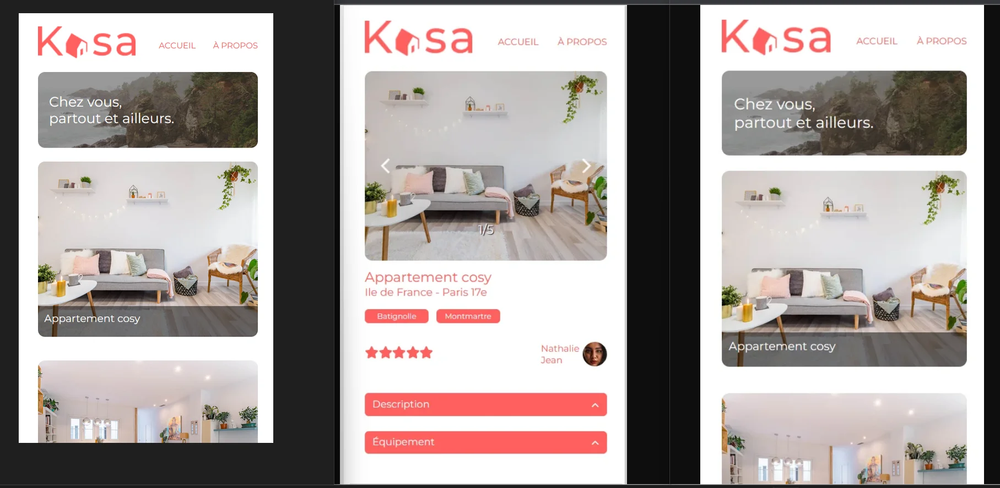

À propos de Moi
Reconversion professionnelle
J'ai décidé de me lancer dans l'univers du web.
J'avais besoin d'être guidée pour savoir par où commencer.
C'est là qu'OpenClassroom entre en jeu.
Formation
"Intégratrice web" proposée sur 9 mois du 15 janvier au 15 octobre 2023
Langages et frameworks
Compétences et savoirs-faire
Gestion de projets
Présentations orales et supports de communication
Adaptabilité, créativité, gestion du stress
Versionning via GitHub
Esprit d'équipe
 
